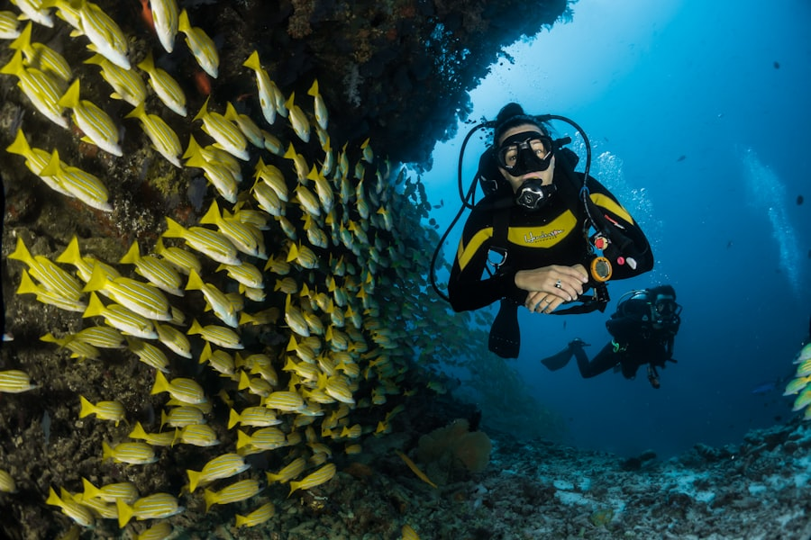
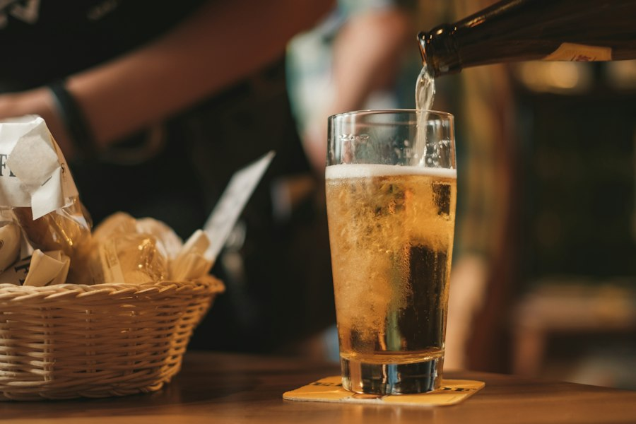

The Complete Experience
Craft Beer, Artisan Spirits & Coastal Soul
Founded by pioneers Clarence and Donnica Boston, Hippin' Hops redefines the taproom model with elevated Cajun seafood and on-site spirits production.

Seafood Bar
Flame-Baked Oysters
Fresh coastal oysters charbroiled on the half shell with six decadent toppings including Smoked Gouda, Garlic Butter Herb, and classic Rockefeller.
Explore Oyster Menu →
Taproom Brewhouse
House Craft Drafts
From the crowd-favorite Cherry Limelight Sour to juicy double IPAs and velvety oatmeal stouts, every pint is brewed with character and precision.
View On-Tap Beers →
Micro-Distillery
Artisan Spirits & Cocktails
Distilling small-batch rums, whiskeys, and botanical spirits for signature craft cocktails like Shake Ya RUMPunch and Smoked Bourbon Old Fashioneds.
Discover Spirits →